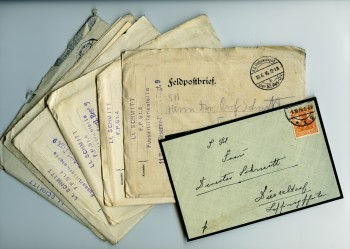

Podcast WK I. Der erste Weltkrieg in Literatur und Öffentlichkeit
Ein Projekt des Heinrich-Heine-Instituts, des Stadtarchivs Düsseldorf und des Comenius-Gymnasiums Düsseldorf
Podcast WK I ist der erste Beitrag des Heinrich-Heine-Instituts der Landeshauptstadt Düsseldorf zum rheinlandweiten LVR-Verbundsprojekt "1914 – Mitten in Europa". Podcast WK I wird gefördert über das Programm „Archiv und Schule“ des NRW-Ministeriums für Familie, Kinder, Jugend, Kultur und Sport und durch den Düsseldorfer Geschichtsverein. Mit Podcast WK I macht das Rheinische Literaturarchiv des HHI, aufbauend auf den Erfahrungen mehrerer erfolgreicher archivpädagogischer Unternehmungen, einen neuen Versuch, archivarische Inhalte in jugendaffiner Form an die heranwachsende Generation zu vermitteln. Außerdem ist das Stadtarchiv Düsseldorf mit seinen reichhaltigen Beständen zur Stadtgeschichte als Projektpartner hinzugestoßen.
Für Podcast WK I wurden zwei Deutsch-Leistungskurse der Jahrgangsstufe Q1 des Düsseldorfer Comenius-Gymnasiums an Archivalien und Sammlungsmaterialien der beiden Häuser herangeführt, um ihnen in wissenschaftspropädeutischer Absicht Einblicke in die Welt der Archive und ihrer Recherchemöglichkeiten zu gewähren. Verschiedene Projektgruppen haben unter Anleitung von Archivmitarbeitern und Lehrern eigenständige Beiträge zum literarischen und öffentlichen Leben am Vorabend des Ersten Weltkriegs erarbeitet.
Die Schüler nahmen dazu folgende Themen im Heine-Institut und im Stadtarchiv Düsseldorf in den Blick:
a) im Heine-Institut:
Feldpostkarten aus dem Nachlass Wilkar Schmitt
Hermann Harry Schmitz. Ein Dichter am Vorabend des Krieges
Kriegslyrik. Bücher und Archivalien
Leonore Niessen-Deiters – Eine Autorin der Vorkriegs- und Kriegszeit zwischen Emanzipation und Reaktion
Der Schriftsteller Hanns Heinz Ewers im Internierungslager Fort Oglethorpe, USA
Der Dichter Herbert Eulenberg in Ober Ost
b) im Stadtarchiv
Kriegsbegeisterung
Alltag im Ersten Weltkrieg
Zensur
Repräsentative Materialien wurden didaktisch vorbereitet, auf deren Basis die Arbeitsgruppen ihre Präsentationen entwickeln konnten. Um jugendlichem Nutzerverhalten entgegen zu kommen, wurden die Resultate nicht nur in schriftlicher Form aufbereitet, sondern auch in Form von Hörstücken als downloadfähige Podcasts, die auf dieser Webseite als gemeinsamer Lehr- und Lernplattform veröffentlicht sind, um den Mitschülern oder anderen Interessenten die ernste Thematik auf spannende und kritische Weise zu vermitteln. Produziert wurden die Podcasts im Studio R & S Audio Marketing/ Rennebaum und Schuknecht GbR, inszeniert und umgesetzt von den Schülerinnen und Schülern selbst.
Betreut und realisiert haben dieses Projekt
- im Heinrich-Heine-Institut: Tim Breitbach, Gaby Köster, Elise Langer,
Dr. Enno Stahl (Leitung), Martin Willems
- im Stadtarchiv: Kerstin Früh, Klaudia Wehofen
- vom Comenius-Gymnasium die Lehrer: StD Georg Aehling (Koordinator Schule), Dr. Urban Küsters, Dr. Simon Wortmann
- im Studio R + S: Heiner Rennebaum (Tontechniker)